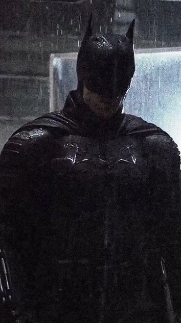

O batman é um dos hérois mais populares de todo o mundo e já quase tudo foi dito sobre este personagem. Mas será que existe mais algum segredo sobre Cavaleiro das Trevas? será que existe algo que os fãs da DC Comics desconheçam sobre este iconico héroi? 🦇 🦇 🦇
12 curiosidades sobre o Batman

Durante a década de 30 ele chegou a matar um montão de criminosos nos quadrinhos, servindo de inspiração para Zack Snyder para o filme Batman v Superman.
Assine a HBO Max para poder ter acesso a todos os filmes do Batman e do Universo DC!
O artista dirigiu, em 1964, u filme que se chamou Batman Drácula. Foi a primeira vez que a expressão "Batman" foi utilizada num filme.
O filme era bem estranho e abstrato, diferente daquilo que o público atual está habituado.

No início, Batman era o vigilante de Nova Iorque, mas virou o protetor de Gotham City um dos caras por trás da parada toda, que abriu uma lista telefonica e viu uma empresa chamada Gotham e gostou da ideia colocá-lo numa cidade fictícia.
O seu nome é Kevin Conry e deu voz ao personagem em seis animação, cinco filmes e seis games, passando 12 anoos interpretando o personagem.

Isso aconteceu em um dos raros crossovers entre os personagens da Marvel e da DC, fo o criado o Garra das Trevas, uma fusão entre esses personagens, e seu alter-ego Logan Wayne